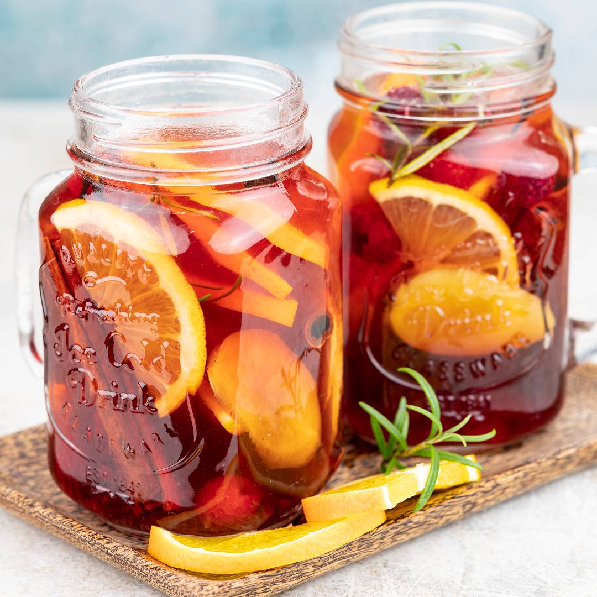

Home
Auntumn Tea

Best dring for cold evenings with friends.
Winter tea is a delicious, warming drink that is also perfect for colds. Here are some ideas for additives and serving suggestions.
list of ingredients:
- 500 ml of your favorite, strongly brewed tea, e.g., black tea
- slices: orange, lemon, lime, fresh ginger
- spicy additions: cinnamon bark, cloves, cardamom, anise
- to sweeten: raspberry syrup or other; honey or sugar
- other fruits: raspberries, cranberries, and fresh and/or dried apples
- fresh herbs: mint, lemon balm, rosemary
How to prepare this amazing meal
- Make a tea with pre-prepared slices
- Add sugar, fruits and herbs of your choice
- Dring with your friends and lot of smiles
Bon appétit!